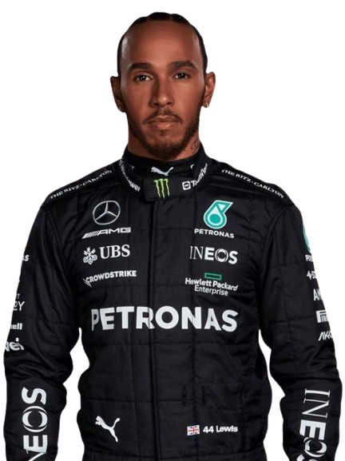
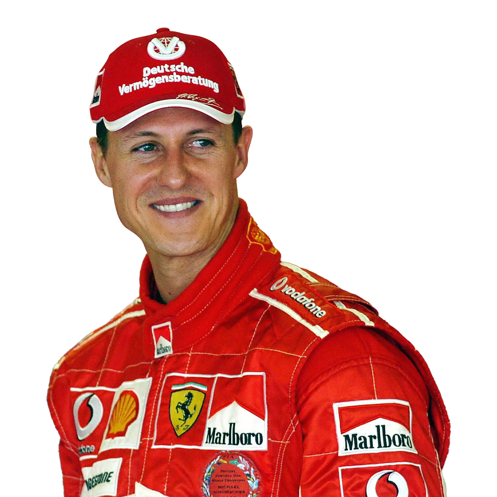
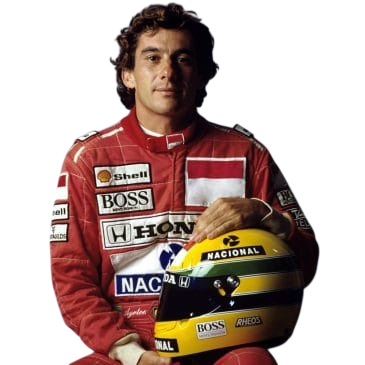

My Favorite Car

I'm putting together this page to share why I love Formula 1 and some of my favorite drivers and teams.
Formula 1 is the pinnacle of motorsport, combining cutting-edge technology, incredible skill, and high-stakes competition. The speed and precision of the cars are awe-inspiring, and the races are full of drama and excitement.
What draws me in is the mix of split-second decisions and long-term strategy — one bad pit stop or a single mistake can cost a driver the whole race. Every track is different too, so a team that dominates on fast straights might struggle at a tight, technical circuit. And beyond the racing, there's the ongoing drama off the track — driver moves, team rivalries, and shifting form from season to season — that keeps me coming back.

A 7-time World Champion, Hamilton dominated with Mercedes for over a decade, driving cars like the magnificent W11 - considered one of the most dominant F1 cars ever built. His skill, consistency, and ability to perform under pressure have made him a legend in the sport. He now races for Ferrari.

A 7-time World Champion, Schumacher redefined Ferrari's fortunes in the early 2000s, winning five consecutive titles from 2000 to 2004 with cars like the legendary Ferrari F2004. His relentless pursuit of perfection and unmatched work ethic made him one of the most successful drivers in F1 history.

A 3-time World Champion known for his raw speed and rain-driving mastery. Senna won titles with McLaren, driving iconic cars like the MP4/4 and MP4/8 - the same car featured in the image below. His legendary battles with Alain Prost and his tragic death at Imola in 1994 cemented his status as one of the greatest drivers in F1 history.